Ten infrastructure build-outs, ten abatement-cost curves. The pattern is consistent: a slug of carbon can be cut at negative cost — recycled materials that are cheaper, not dearer — before any premium tonne is bought.
A plain-language MACC analysis across roads, bridges, water, wastewater, grids, power, rail, ports, data centers & buildings — built & operational carbon, $/tCO₂e, cost per functional unit, and seven regions (US, EU, Asia, Australia, India, Japan, Brazil). Built on Infrastructure Australia, Carbon Leadership Forum/RMI, GCCA, IEA & Ember data (2022–2026)1,2,3 — with CarbonSig research-tool notes.
Bottom Line Up Front
The argument in one breath. Across all ten infrastructure types, the abatement-cost curves share a shape: a band of cost-negative levers (recycled aggregate, reclaimed asphalt, lower-clinker concrete, structural lightweighting) sits below the zero line — cutting carbon while saving money — followed by a rising premium for the deeper cuts (electrified fleets, green steel, bio-fuels, CCS). Infrastructure Australia found four of eleven material strategies are net cost-saving and one is cost-neutral;5 RMI/CLF reach the same verdict for buildings.4 The strategic implication: most of the early abatement is a procurement decision, not a cost. Two numbers set the scale: embodied carbon is already ~10% of national emissions in a developed economy,5 and it is locked in the day the asset is built — unlike operational carbon, it cannot be cleaned up later by a greener grid.5
This brief gives each of ten build-out types its own marginal abatement cost curve (MACC): levers ranked cheapest-first, bar width proportional to how much carbon each can cut, with the zero line separating money-saving moves from premium ones. Each curve is paired with the functional units stakeholders actually budget in — $/km, $/MW, $/m³, $/m² — and both embodied (built) and operational carbon. A closing regional map shows how the same asset's footprint shifts across the US, EU, Asia, Australia, India, Japan and Brazil, and how CarbonSig is used to model any of it at the project level.
The framing treats carbon as money. Where embodied carbon is priced — Buy Clean procurement, CBAM on materials, low-carbon-concrete mandates — the MACC stops being an environmental chart and becomes a cost curve a project engineer optimizes against, exactly like a bill of materials.
Method · How to read this report
A marginal abatement cost curve ranks every carbon-cutting lever by its cost per tonne avoided ($/tCO₂e), cheapest first, with each bar's width showing how much carbon that lever can cut. Levers below the zero line are net cost-saving; above it, they carry a premium that rises steeply for the last tonnes. McKinsey originated the format in 2007;72 it is now standard in net-zero roadmaps.
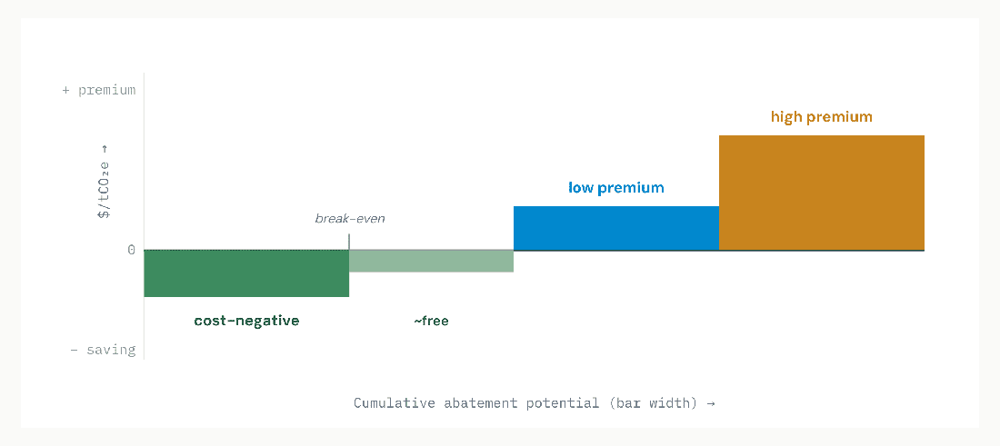
Read: Work left-to-right and stop where the curve crosses your carbon price. Everything left of that point pays for itself or beats your price; everything right of it is a deliberate premium for deeper cuts. Cost basis: each curve covers both embodied (materials + construction) and operational (energy + maintenance over the asset life) carbon; $/tCO₂e is the lever's net lifecycle cost per tonne avoided. Values are indicative syntheses of the cited sources, normalized for comparability across sectors.
The two cost bases, kept separate Embodied (built) carbon is fixed the day the asset completes — it can only be designed out, never retrofitted away. Operational carbon (pumping, lighting, traction, cooling, 40-year maintenance) depends on the grid and decays as electricity decarbonizes. The split matters: embodied-dominated assets (roads, bridges) reward material choices; operational-dominated assets (water pumping, data centers) reward energy choices. Each section flags which kind it is.
Cross-Sector Overview
Before the ten curves, one orienting picture: infrastructure types differ sharply in whether their carbon is embodied (locked in materials) or operational (burned over decades of use). That split decides which levers matter and how much free abatement is on the table.
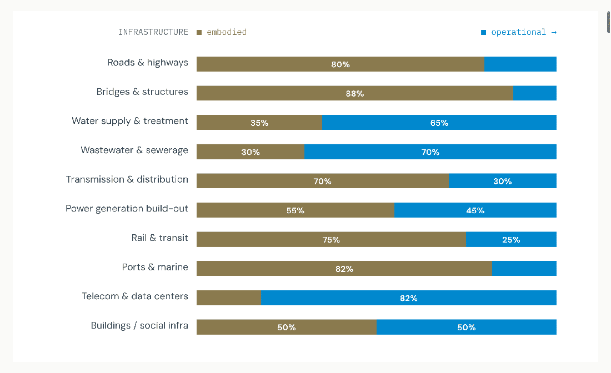
Read: Embodied-dominated assets (bridges 88%, ports 82%, roads 80%, rail 75%) are won or lost at the material-procurement stage — recycled steel, low-clinker concrete, lightweighting. Operational-dominated assets (data centers ~82% operational, wastewater ~70%, water ~65%) are won at the energy stage — clean power and pump/process efficiency. Buildings and power-plant builds sit in the middle. Source: Infrastructure Australia (embodied locked at build);5 IEEE/Schneider (data-center ~60% operational, ~40% embodied including devices);105 CLF benchmarks.81 Splits indicative.
Why this ordering matters for spend For the embodied-heavy four, the cost-negative levers (recycled materials) capture real abatement on day one with no grid dependency — the fastest, cheapest wins in the whole report. For the operational-heavy assets, the lever is a power contract and an efficiency design, and the payoff compounds as the grid cleans up. CarbonSig models both in one canvas (see closing section).
Infrastructure 01
Roads are embodied-dominated: most whole-life carbon is in pavement materials and earthworks, with operational carbon from lighting and 40-year maintenance cycles. Whole-life carbon runs ~800–2,700 tCO₂e/km depending on scale (single-2-lane to dual-3).76 The cheapest cuts — reclaimed asphalt and recycled aggregate — are cost-negative.
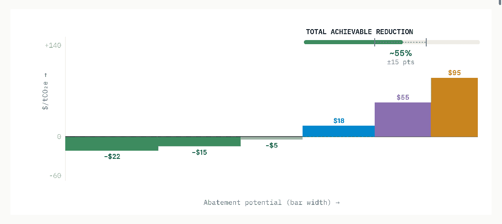
Read: Roads are the clearest cost-negative case: reclaimed asphalt and recycled crushed concrete reduce material spend while cutting carbon (Infrastructure Australia).5 The premium tonnes (fleet electrification, bio-fuels) wait until grids and HVO supply mature.
Infrastructure 02
Bridges are the most embodied-dominated infrastructure — nearly all carbon is in structural concrete and steel, with negligible operational energy. Span choice and material strength dominate: lower concrete grades and steel right-sizing cut carbon at little or no cost; green steel and low-carbon concrete carry a modest premium.82
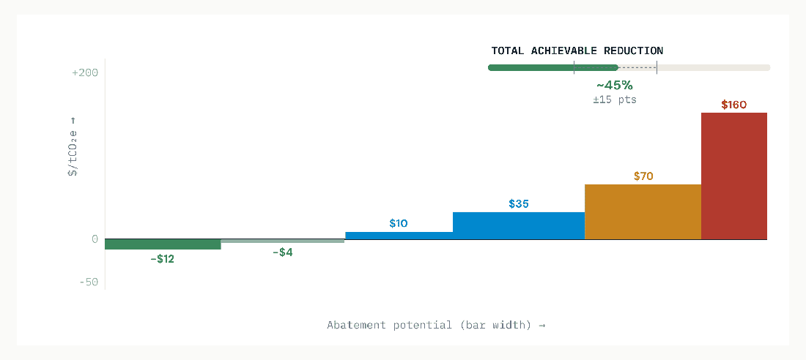
Read: Because operational carbon is near zero, a bridge's whole-life answer is set entirely at design. Site/span selection alone can swing embodied carbon materially (BSCES);82 green steel is the big-ticket residual lever.
Infrastructure 03
Water shifts toward operational dominance: pumping and treatment electricity over decades outweigh the embodied carbon of pipes and plant concrete. The master lever is therefore clean grid power + pump efficiency; embodied cuts come from low-carbon pipe materials and concrete.5
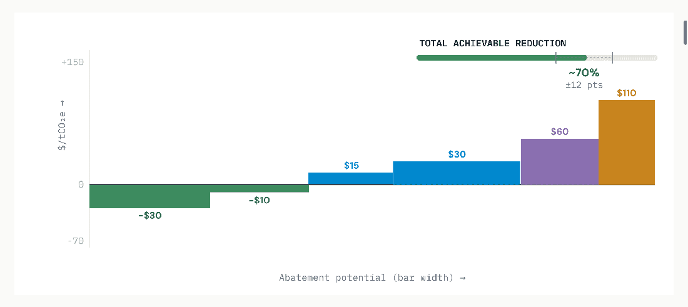
Read: Efficiency is genuinely cost-negative — every kWh saved cuts both the power bill and the operational carbon. The grid factor is decisive: the same plant's operational carbon varies ~6× across regions (see regional exhibit).
Infrastructure 04
Wastewater is strongly operational-dominated, with a twist: aeration electricity and direct process emissions (CH₂ and N₂O from treatment) that no grid greening touches. The curve mixes energy levers with process-control and biogas-capture levers.5
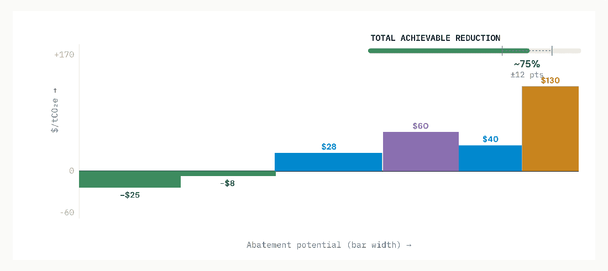
Read: Biogas capture can make a plant energy-positive — a cost-negative lever that also displaces grid power. Process N₂O is the hard residual: high GWP, no cheap fix, a prime target for measurement & control.
Infrastructure 05
T&D is a mixed profile: embodied carbon in steel towers, aluminium conductor and concrete foundations, plus operational carbon from line losses (energy dissipated over decades, valued at the grid factor). Lower-loss conductors and recycled steel/aluminium lead the curve.5
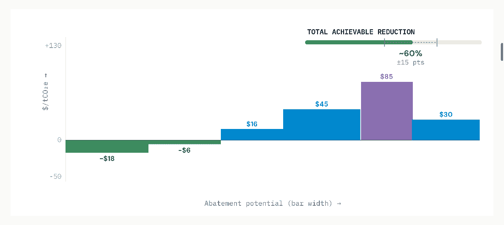
Read: Aluminium conductor is the embodied hotspot — recycled or renewable-powered aluminium is the key materials lever (ties to the aluminium brief). Line losses convert directly to operational carbon at the local grid factor, so low-loss design pays twice.
Infrastructure 06
For the physical build of generation, carbon is embodied in foundations, towers and equipment — operational carbon belongs to the fuel, not the structure. Embodied intensity per kWh delivered: wind ~10–15 g, solar ~40–70 g (life-cycle), so the lever set is concrete, steel and panel/turbine supply chains.102
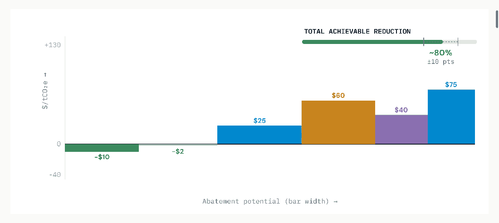
Read: The build-out's own footprint is small per kWh but scales with the gigawatts deployed for the transition. Foundation concrete is the single biggest embodied item — low-carbon mixes are the highest-leverage materials lever.
Infrastructure 07
Rail is operational-leaning once electrified (traction power over decades), but with heavy embodied carbon in track steel, concrete sleepers, ballast and especially tunnels/viaducts. The curve pairs materials levers with traction-power decarbonization.78
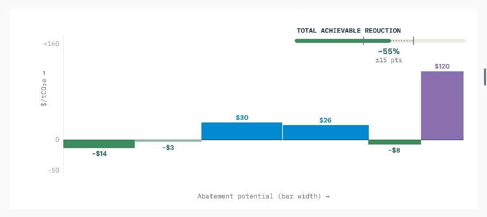
Read: Tunnels and viaducts dominate embodied carbon — alignment choices (avoiding tunneling) are the largest single lever, set at planning. Electrified traction shifts the asset onto the grid's decarbonization curve.
Infrastructure 08
Ports are embodied-dominated by huge volumes of marine concrete and steel sheet-piling, plus the fuel/energy of dredging and yard equipment. Marine concrete (durability-driven, high cement) is the hotspot; equipment electrification (cranes, yard tractors) leads the operational cuts.5
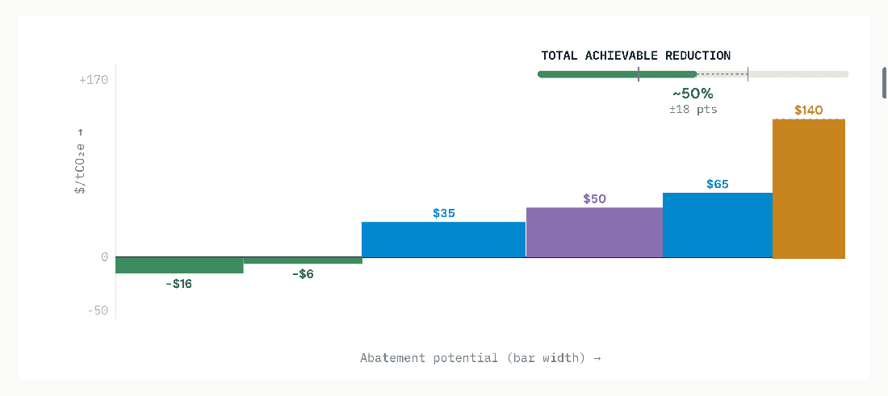
Read: Marine concrete's durability requirement keeps cement content high — low-carbon marine mixes are technically harder but high-impact. Shore power moves berth emissions onto the grid, compounding with grid greening.
Infrastructure 09
Data centers are the extreme operational-dominated case — the building shell is only ~7% of lifetime emissions; the rest is electricity for compute and cooling.105 The curve is overwhelmingly about clean power and efficiency (PUE), with embodied levers (low-carbon shell, server lifetime) as the minority.
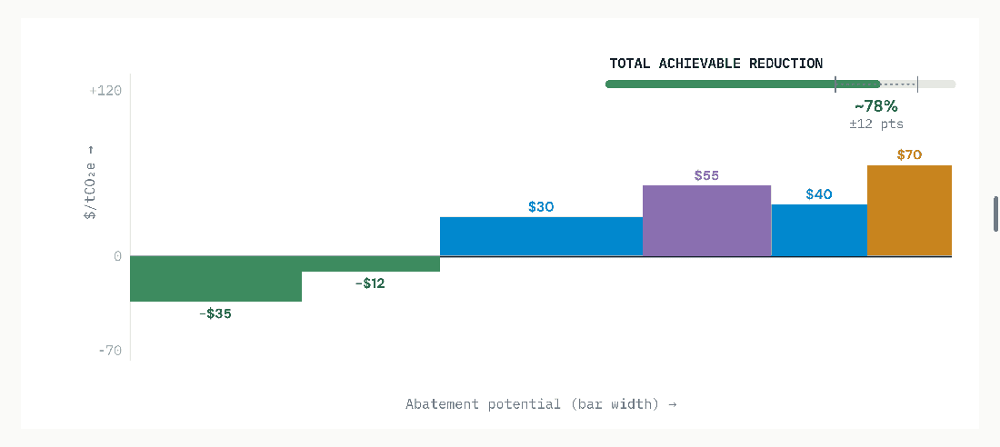
Read: Because operational carbon dwarfs embodied, where you site it (the grid factor) is the dominant lever — the same MW emits ~6× more on a coal grid than on Brazil's or France's. Efficiency (PUE, server life) is cost-negative; clean-power procurement is the strategic spend.
Infrastructure 10
Social buildings are balanced: roughly half embodied (frame, envelope) and half operational (HVAC, lighting, plug loads) over a long life. RMI/CLF case studies show low-embodied-carbon design is often achievable at no cost premium; operational cuts come from efficiency and clean power.80,83
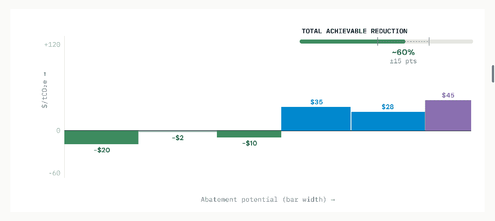
Read: The RMI finding is the headline: low-embodied-carbon buildings frequently cost the same or less when material efficiency is pursued early.83 Heat-pump electrification plus clean power closes the operational half.
Regional Multiplier
Identical infrastructure carries very different carbon depending on where it is built and operated. Two regional factors drive it: the grid carbon intensity (which sets operational carbon and the carbon of any electrified equipment) and the material carbon intensity (local cement and steel, which set embodied carbon). A data center in Brazil and one in coal-heavy Asia can differ 5× in operational carbon for the same design.
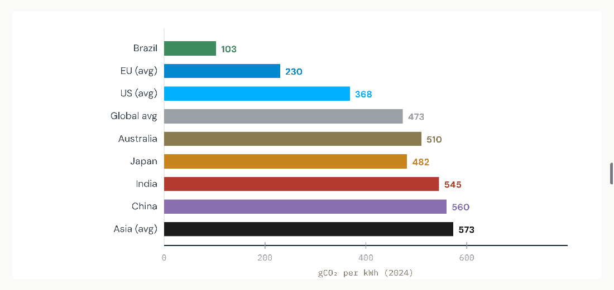
Read: Operational carbon — and the carbon benefit of electrifying any fleet or process — scales directly with these numbers. The same electrified paving fleet or pumping station abates far more in Brazil (~103) or the EU than in coal-heavy Asia (~573), where electrification can even raise emissions until the grid cleans up. Source: Ember Global Electricity Review 2025 (Brazil 103, Japan 482, China 560, Asia 573, global 473);92 IEA Electricity 2025 (global 445→400 by 2027);95 US/EU/India/Australia from Ember & Enerdata.92,97
The two-factor regional rule of thumb Operational carbon follows the grid map above — build power-hungry assets (data centers, water/wastewater pumping, electrified rail) where the grid is clean (Brazil, EU, hydro-rich regions). Embodied carbon follows local cement and steel intensity — CBAM-style border pricing and Buy Clean rules are now making low-clinker concrete and recycled/green steel a procurement requirement in the EU and parts of the US, while India and parts of Asia carry higher default material intensities. The cost-negative recycled-material levers work everywhere, regardless of grid.
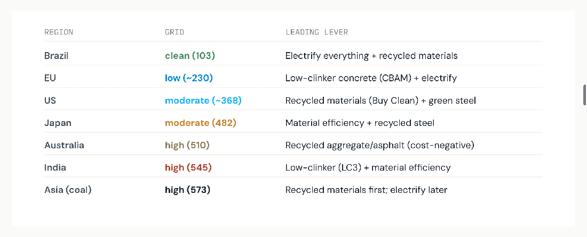
Read: In clean-grid regions, electrifying fleets and processes is a top lever; in coal-heavy grids, the same move waits behind recycled materials and efficiency, which save carbon regardless of the grid. CBAM (EU) and Buy Clean (US) are turning low-carbon materials from option into requirement. Source: grid values per Ember;92 lever logic per Infrastructure Australia & GCCA.5,86
Research Tool
Every curve in this report is a generic answer. A real project — this highway, in this region, with this concrete supplier — needs its own curve. CarbonSig is the tool that builds it: a digital twin of the infrastructure asset where each material, fuel and process is a node carrying its own carbon factor, so a planner can test a lever and watch carbon, cost and $/tCO₂e re-price instantly — the MACC, computed live for the actual bill of materials.
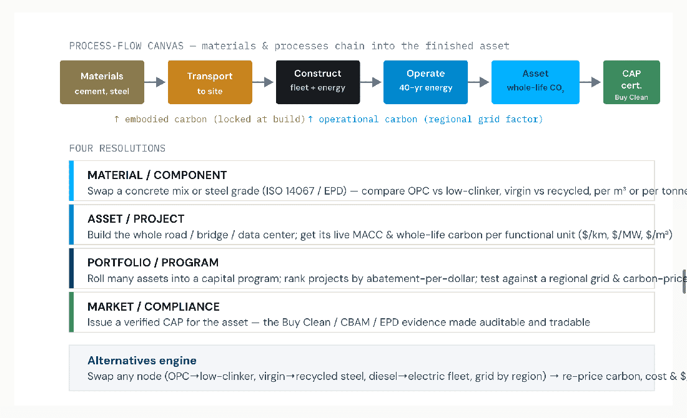
How it maps to this report: every lever in the ten curves becomes an editable node; embodied vs operational (cross-sector exhibit) and the regional grid factor (regional map) are built in; the output is the project's own MACC plus an auditable, Buy-Clean/CBAM-ready certificate. CarbonSig platform notes — any value chain digitally twinned with PCF/CI, CAP certificates, scenario modeling & 3rd-party verification.12
The synthesis. Every infrastructure type has a cost-negative band of carbon to cut before any premium is paid — but the exact curve depends on the asset, the materials and the region. CarbonSig is the research tool that computes that specific curve, turns the generic findings of this report into a project decision, and issues the certificate that makes a verified low-carbon asset worth more than its high-carbon twin.
Carbon-Neutral Infrastructure
The ten cost curves answer "how far can we cut?" They never reach zero — every asset has a residual of embodied carbon (calcination CO₂ in cement, process emissions in steel) that no material substitution removes. The correct accounting standard for closing that last gap is ISO 14068-1:2023, which defines carbon neutrality through a strict hierarchy: reduce first, enhance removals second, and offset only the residual — increasingly with durable removal credits, not avoidance offsets.13,14 Pair the MACC (reduce) with a removal instrument (neutralize the residual) and an infrastructure asset can be made verifiably carbon-neutral — at a calculable, and falling, premium.
The argument in one breath. A road, bridge or data center that has exhausted its cost-negative and low-premium levers still emits a residual. Under ISO 14068-1:2023 that residual may be neutralized with high-quality carbon credits — and the standard pushes buyers toward permanent removals. The cost depends entirely on the instrument: nature-based removals run $6–50/t, biochar ~$125–180/t, enhanced weathering ~$200/t, BECCS ~$390/t, and direct air capture (DAC) ~$300–600/t today.15,16,17 Because the residual after a good MACC is small, even premium DAC adds a bounded, modelable cost — and CarbonSig computes the least-cost blend of reduction + removal that reaches neutral. The worked examples below cover all ten infrastructure types — each with its achievable reduction (and uncertainty) and the resulting neutrality premium.
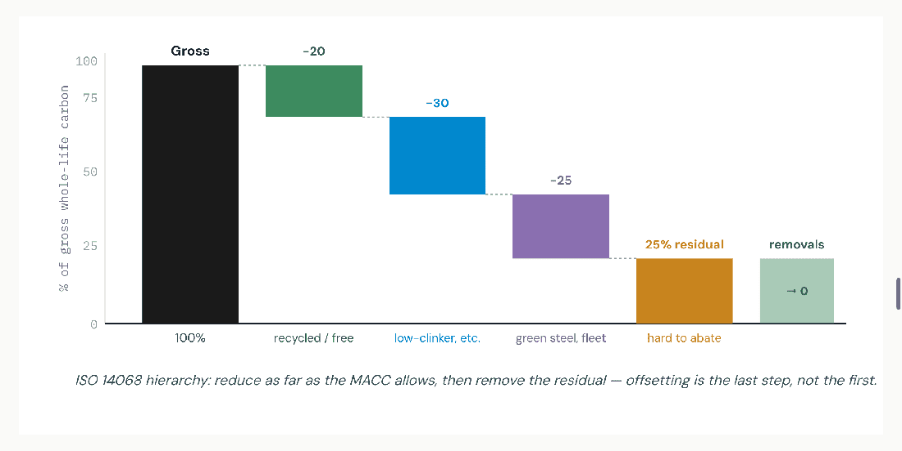
Read: The MACC does the heavy lifting (here ~75% cut); durable removals neutralize only the ~25% residual that material and energy levers cannot reach. A smaller residual means a smaller removal bill — so spending on reduction first is what makes neutrality affordable. Source: ISO 14068-1:2023 hierarchy (iso.org);13 cement calcination ~40–50% of concrete CO₂ is process-inherent.86 Shares indicative.
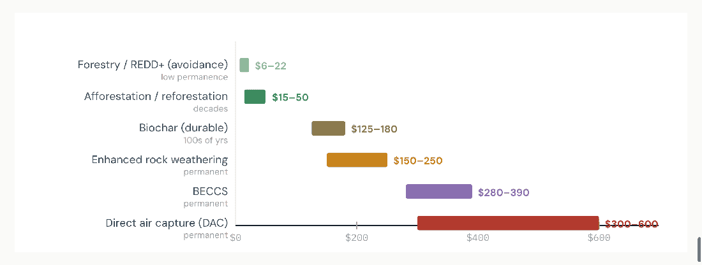
Read: Cheap nature-based offsets ($6–50) carry permanence risk; ISO 14068 steers neutrality claims toward durable removals. DAC at ~$300–600/t is the most expensive but offers permanence, scalability and verifiability — the gold-standard tonne for a credible carbon-neutral asset. Sources: Sylvera 2026 (ARR $22, biochar $177, ERW $200+, BECCS $389, DAC $500+);17 IEA & ETH Zürich DAC $230–630 scaled (ETH 2024);15,16 Puro.earth CORC biochar index ~$125–145 (2025).17
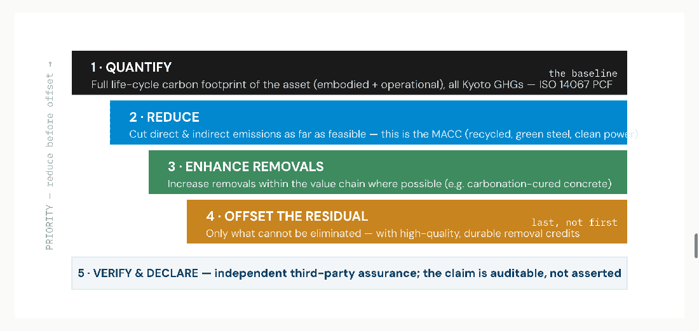
Read: ISO 14068 is what separates a defensible "carbon-neutral road" from a greenwash. Offsetting is permitted only for the residual that survives reduction and in-boundary removals, and the standard pushes the credit mix toward permanent removals over time. Source: ISO 14068-1:2023 (iso.org/standard/43279);13 hierarchy & residual-only offsetting per ISO preview & Seedling/ECA summaries (Seedling 2026).14
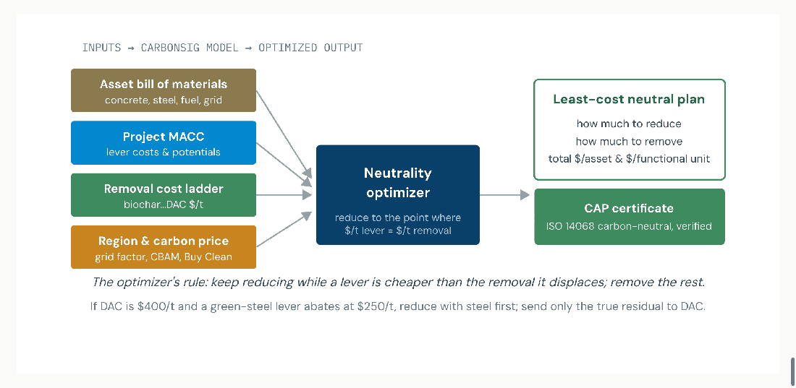
Read: Neutrality is an optimization, not a checkbox. CarbonSig sets the project's marginal abatement cost against the marginal removal cost and solves for the cheapest mix that reaches zero under ISO 14068 — then issues the verified CAP. As DAC and biochar costs fall, the model re-balances toward removals automatically. Source: method follows the MACC-vs-backstop logic (McKinsey);72 CarbonSig CaRMa platform capabilities (digital twin, scenario modeling, CAP, ISO 14067/14068 alignment).12
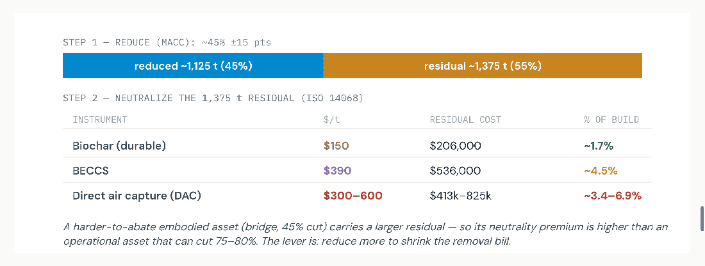
Read: The bridge is a deliberately hard case — embodied-dominated, with process CO₂ in cement/steel capping reduction near 45%. Even so, neutrality lands at ~1.7% (biochar) to ~6.9% (DAC high). Sources: bridge carbon/cost from CLF/IStructE;80,81 DAC $300–600/t (IEA, ETH Zürich);15,16 biochar/BECCS (Sylvera 2026).17 Illustrative.
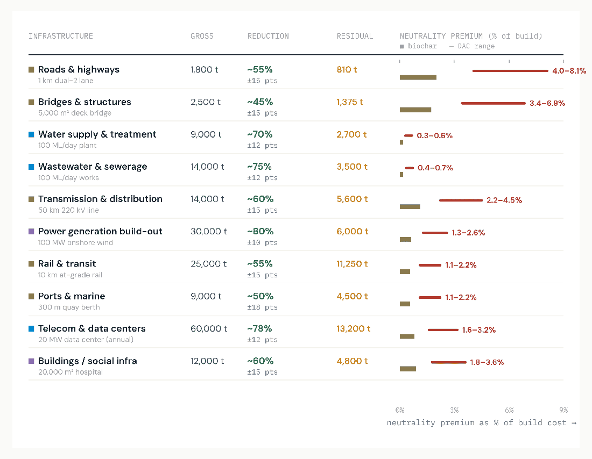
Read: Two patterns. (1) Capital-heavy, operational assets (water, wastewater, power, data centers) neutralize for well under 1% — their build cost dwarfs the residual removal bill. (2) Material-light, embodied assets (roads, bridges) carry the highest premium (up to ~7–8% with DAC) because their residual is large relative to a modest build cost and process CO₂ caps reduction. The lever everywhere: cut deeper to shrink the residual before buying removals. Sources: functional-unit carbon & cost per the ten sections above (CLF/IStructE, IEA, Infrastructure Australia);5,80,81 DAC $300–600/t (IEA/ETH);15,16 biochar $150 (Sylvera).17 Reduction %, residuals & premiums are illustrative syntheses.
Why this matters for the carbon-as-money thesis Once an asset can be made verifiably carbon-neutral under ISO 14068 at a known, single-digit-percent premium, neutrality becomes a procurement option with a price tag — not an aspiration. The reduced-plus-removed asset earns the low-carbon premium, qualifies for Buy Clean / CBAM-aligned tenders, and carries a CAP certificate proving it. CarbonSig is where the reduction MACC and the removal ladder meet, so an owner can price neutral before breaking ground.
Sources & Authorities
All ten abatement-cost curves and the cross-sector split are indicative syntheses normalized for cross-sector comparability: lever orderings and the cost-negative-band finding are grounded in the cited sources (notably Infrastructure Australia and CLF/RMI), but specific $/tCO₂e values and abatement widths are illustrative and will vary by project, supplier, region and year. Headline figures (embodied ~10% of national emissions; ~15–25% abatement at zero/negative cost; 30–70% cement reductions; the regional grid-intensity values) are sourced as cited. This is a strategic-planning aid, not a substitute for project-level LCA — which is precisely the gap the CarbonSig research tool fills. Reference numbering preserves the source IDs used across the CarbonSig brief series.